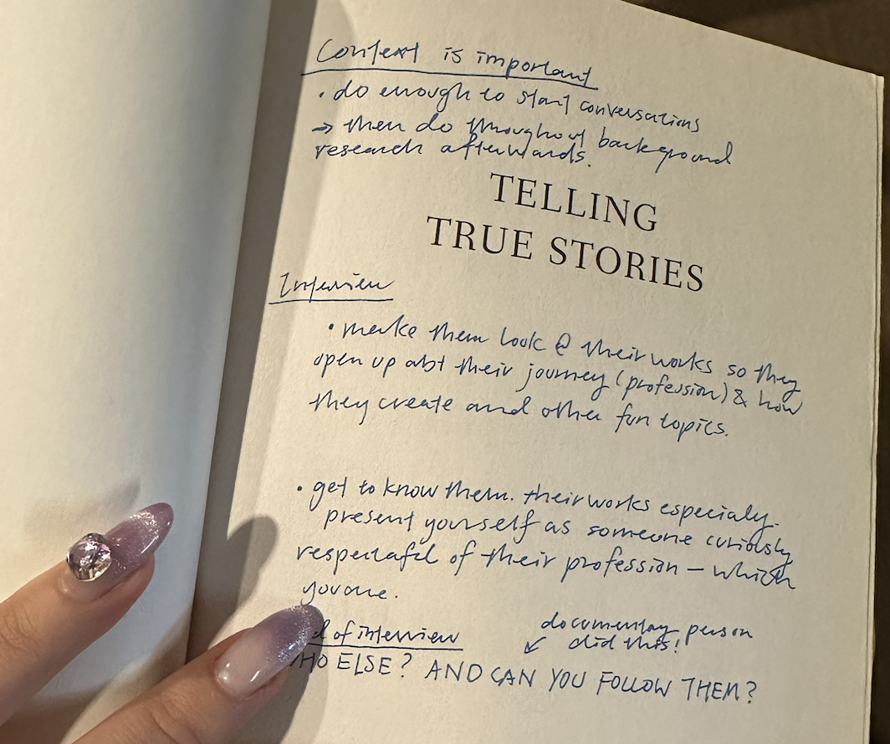

Smart Loading Zone Redesign
....................
An Unfiltered Diary
You are driving down the street and notice a purple curb. What the heck is this? Did they run out of yellow paint?
Purple curbs in Pittsburgh stand for Smart Loading Zones, which aim to reduce vehicle emissions. They were strategically placed in streets that experienced double parking and traffic congestion, and they replaced regular, unpaid loading zones.
Thus, four graduate students embarked on a journey to make curb-side management great again moderately more acceptable to everyday people like you and me.
Because nobody likes parking, and nobody likes to pay for parking.
8/27 - learning goals
I submitted three learning goals for the class:
1. As a designer, I want to familiarize myself with research methods to better understand the needs of researchers and be an empathetic teammate.
2. I want to be able to write research objectives and match the appropriate research methods to those objectives.
3. I'm interested in both designing for nonprofits and emerging technologies, so I hope to learn how research can help bridge the needs of different entities.
9/19 - compromise over collaboration?
Today I learned about my conflict style – I’m mostly a compromiser but I don’t like asking for help. Not exactly shocking. I will keep this in mind and be open about needing help, if this becomes an issue.
9/26 - bringer of… icebreaker
My teammates are lovely and some of them seem very experienced in research. I’m hoping to learn from them, since I’m more of a designer. I told them I’ve collected a lot of icebreakers for team meetings from previous experiences, so I’m in-charge of the vibes.
We started doing data analysis and I’m surprisingly very good at Excel? Thank you, previous internship at auction house, my hours of inputting competitor analysis data did not go to waste. I’m starting to understand the workstyles of my teammates, and I’m definitely the most talkative one. My new role is to make sure everyone is able to communicate their ideas, since I tend to speak my mind as soon as I think of something.
I also remind them to drink water.
10/30 - she is for the streets
User research is getting me out of my comfort zone. As a previous art history student, I didn’t need to do interviews with strangers! I just stare at an artwork really hard and flip through a bunch of books and spend 20 hours in the library… But user research is also fun and rewarding because I get answers I don’t expect. In moments like this, I thank myself for having read this book on good journalism.

I may not be good at writing a research plan yet, since I’m still learning the methodologies and lingos of the field, but affinity clustering is my jam! I like looking at quotes and summarize findings and extract insights from them, brings me back to art history research…
↑ Stickers are essential for expressing one's ideas.
11/14 - brain too smooth
I can’t believe my proudest contribution so far is adding purple lights to the purple curb! I came up with it during Crazy Eights because I was literally at my wit’s end. Therefore, I was honored, touched, and deeply concerned that my teammates took it seriously. I guess I’m infecting others with my smooth brain?
But again, it’s good to be innovative. I’m actually very glad that my teammates took me seriously even though I didn’t have the courage to take myself seriously.

11/21 - never drawn a road sign before, kinda weird
I’m getting more confident at research! We were going to test the low-fi prototype, and I suggested we test both our prototype and a low-fi rendition of the current SLZ sign for comparison (control variable) – because I know my scientific methods! I also drew both the signs and started embracing my designer role again.
Never drawn road signs before, but there is a first time to everything.
↑ The one on the left is our new design.
12/8 - purple rain
The final prototype was well-received during testing and poster session. In hindsight, this project turned out better than I expected it to be, despite moments of dismay throughout the semester because I was convinced that curb management was bigger than a simple design intervenetion. I always had this question in my head: if the ideal solution is infrastructural change, what can I do in the design to achieve anything remotely close to that?
At the same time, it will probably take more than a few people to figure out the problem of using curb management to lower carbon emission. To me, the experience of working with my team and applying various research methods to our project was more valuable than the final result.
Reflecting on my learning goals…
As a designer, I want to familiarize myself with research methods to better understand the needs of researchers and be an empathetic teammate
→ I now understand what methods and metrics are best for different stages of design.
I want to be able to write research objectives and match the appropriate research methods to those objectives
→ I am now confident to conduct user-centered research and apply my findings to a design problem.
I'm interested in both designing for nonprofits and emerging technologies, so I hope to learn how research can help bridge the needs of different entities
→ I have learned that in certain contexts, low-tech solutions are better than a fancy app!
Don't mind me, I'm just questioning life choices in the cold and in the rain.